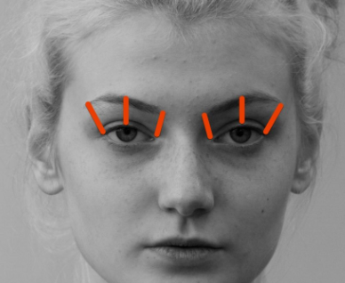

How normal am I? Let the algorithm decide.

Some people journal. Others meditate. Now you can simply open your laptop and let an algorithm evaluate your entire existence. How Normal Am I? is an interactive documentary that uses facial recognition AI to judge your beauty, age, gender, BMI, emotions, and more — then compares you to everyone who came before you. If you score a 6.5 in attractiveness, is that good? Don’t worry. The machine will tell you how you stack up.
The experience feels playful at first, almost like a personality quiz, until you remember similar systems are already used in dating apps, insurance models, hiring software, and advertising. For an algorithm, “normal” has to be defined mathematically — which usually means “average.” And once average becomes the benchmark, anything above or below quietly turns into a deviation.
The project has been viewed over 650,000 times and even won awards,
which is impressive for something that essentially ranks your face
against a database of strangers. It’s part satire, part warning,
and part digital mirror. Because nothing says modern life quite like
asking your webcam, “Am I normal?” and waiting for a percentage.
Try it here:
hownormalami.eu